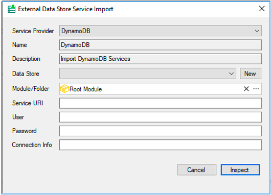
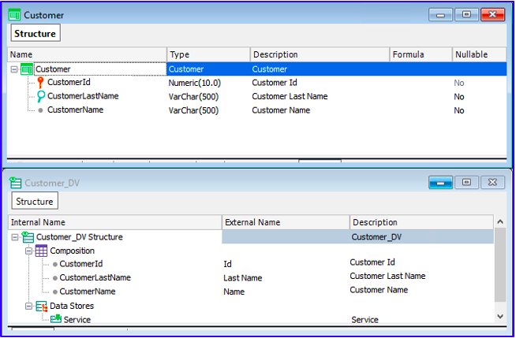

DynamoDB Support in GeneXus
GeneXus makes it possible to consume DynamoDB Databases mainly because of their advantages in terms of scalability. They allow you to scale data reading and writing almost infinitely, without worrying about maintenance of the associated hardware. In addition, you pay for exactly what you use.
This is particularly true in scenarios where the ACID (atomicity, consistency, isolation, durability) properties of relational DBMSs are not required and data consistency is not the most important factor at the time of data insertion.
To use GeneXus with a NoSQL DynamoDB external Database, follow the steps below.
Given a DynamoDB Database:
1. In the GeneXus main menu, select Tools > Application Integration > External Data Store Service Import.
The dialog shown in the image will be displayed:

In the Service Provider combo box, select DynamoDB. The Name and Description fields will be automatically filled in.
In the Data Store combo box, select one of those defined in your KB of the service type. If it doesn't exist, you can create it right there using the New button.
Leave the Service URI field empty.
In User and Password, add the Access Key ID and Secret Access Key provided by Amazon.
Lastly, in Connection Info you can add the following depending on the case:
A. If you are working locally, you need to indicate the URL for the local DynamoDB test service. For example :
localurl=http://localhost:8000
Note: If you are working locally with NoSQL Workbench and the .NET Generator, in addition to the service URL, you must add the region (localhost) to which you are going to connect, as shown below:
localurl=http://localhost:8000;region=localhost
B. If you are working in the cloud, you can indicate the region to which you are going to connect. For example:
region=us-east-1
Also, you can control how many records to read from each Table to get the schema (the default is 15). For example:
importitems=5
The next step is to click on Inspect. GeneXus will connect to the DynamoDB Database and get the metadata and items from the existing Tables.
2. The following dialog box will be displayed, showing the Tables that can be imported. Select the Tables you need:
The Import process, in addition to importing the selected Tables, will import all the secondary indexes, because they are the ones that allow you to perform ordered queries.
For each selected Table, GeneXus will create a Transaction. In addition, it will generate the associated Data Views:

The import process also performs a query on the Table to read the first 15 items. Since DynamoDB is a NoSQL Database, there can be items with different attributes; therefore, GeneXus gets all the attributes included in other items of the Table.
When an attribute doesn't have stored data, it is not imported and you have to add it manually in the Transaction and Data View.
At the moment, only scalar data types are supported, and from these the most appropriate GeneXus data type will be tried to be inferred. For example, the String type can be mapped to Character, VarChar or DateTime depending on the context.
When importing non-scalar data, GeneXus generates a warning and they are set as VarChar. Then, at runtime, the reads return the associated Json as a String.
This import process allows you to work with Transactions, Business Component, For Each commands, and Data Selectors accessing the DynamoDB Database.
See also
With AWS, Uruguay implements vaccination scheduling system in record time (in Spanish)
Simple example with DynamoDB
Videos
 Amazon Web Services and GeneXus: The Key to Building Mission-Critical Systems
Amazon Web Services and GeneXus: The Key to Building Mission-Critical Systems
Next-Gen Trends: NOSQL and Serverless Apps in the Cloud
Creating Mission-Critical Applications
Availability
Since GeneXus 17 Upgrade 9.